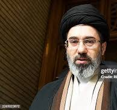

Mojtaba Khamenei, the son of Iran’s Supreme Leader Ali Khamenei, is a name that has increasingly appeared in global political discussions. Often described as a shadowy yet powerful figure, Mojtaba Khamenei is rumored to influence both domestic and foreign policy in Iran. As tensions in the Middle East continue to shape global security and energy markets, understanding Mojtaba Khamenei’s role has become crucial for political analysts, journalists, and policymakers alike.
In recent years, Mojtaba Khamenei has emerged as a significant player behind the scenes, especially in Iran’s military and intelligence strategies. While much of the public focuses on the Supreme Leader, insiders claim that Mojtaba has been actively involved in shaping Iran’s responses to international sanctions, regional conflicts, and internal political reforms. Analysts note that his influence may determine the future trajectory of Iran’s relationships with the United States, Israel, and neighboring Gulf countries.

Visualizing the shift in regional power dynamicsThe Deep Analysis
Mojtaba Khamenei’s rise to prominence has been marked by strategic maneuvering within the Iranian political system. Although not officially holding an elected position, he reportedly commands substantial influence over the Revolutionary Guards and intelligence agencies. This unofficial power allows him to guide key policy decisions, particularly concerning military strategies in the Middle East and nuclear development programs.
Experts suggest that Mojtaba Khamenei may also play a role in managing Iran’s economic and social policies. His influence is said to extend to controlling major financial institutions, which makes him a central figure in understanding Iran’s economic resilience under sanctions. By monitoring his actions and public appearances, observers can often predict potential shifts in Iran’s regional tactics.
"Mojtaba Khamenei represents the hidden hand in Iranian politics, guiding decisions that reverberate across the Middle East and beyond."
This insight highlights the complexity of Iran’s internal power dynamics. The involvement of Mojtaba in high-level decisions suggests that the real political influence in Tehran may not be entirely visible to the outside world. Understanding his role could explain Iran’s strategic responses, including military investments and foreign policy posturing.
Mojtaba Khamenei’s political influence extends beyond Iran’s borders. His strategies can directly affect regional stability, oil markets, and international diplomatic negotiations. Countries such as Pakistan, Iraq, and the Gulf States closely monitor his movements, knowing that policy shifts could impact trade, security, and geopolitical alliances. The world watches him as a figure whose actions may subtly redefine Middle Eastern power balances.